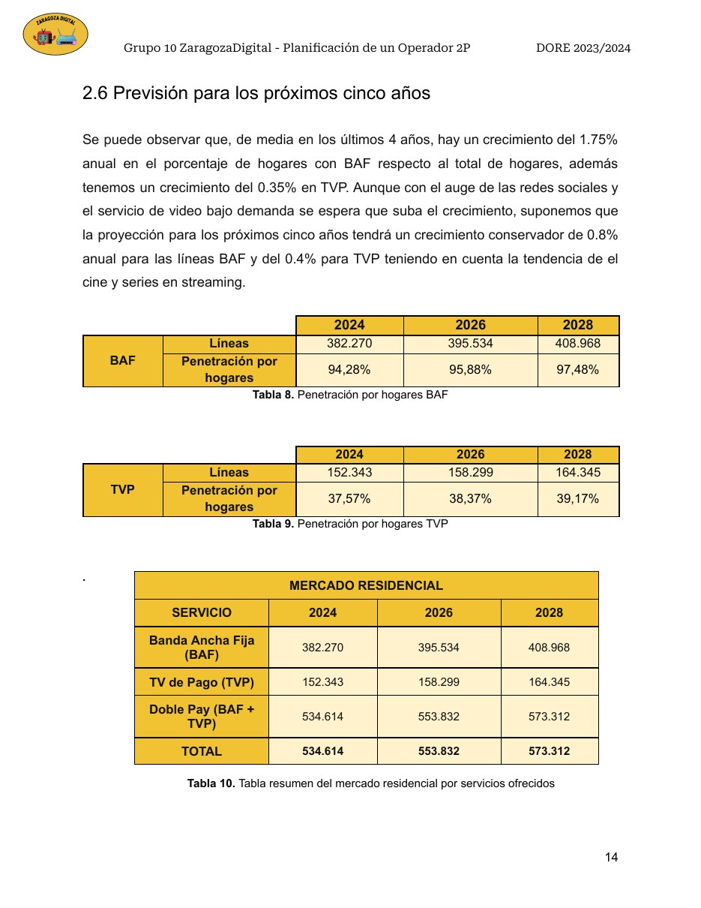
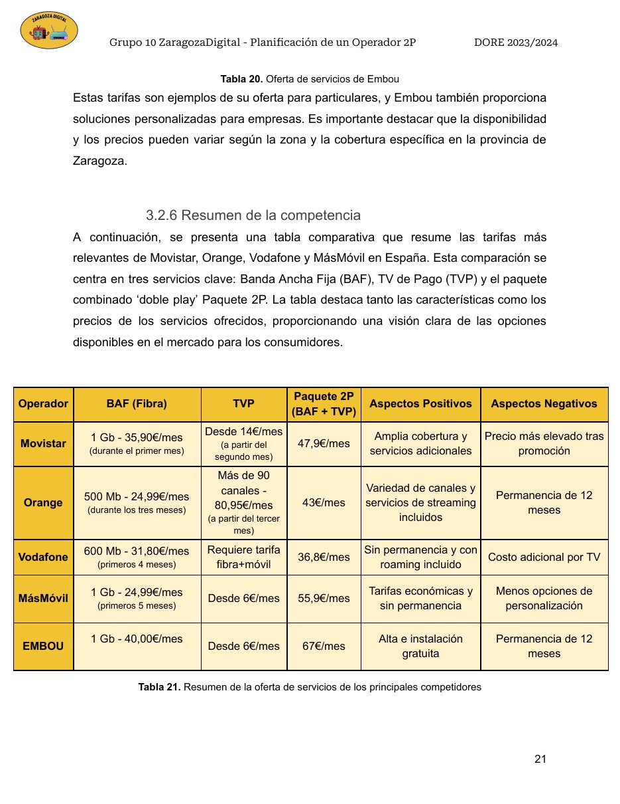
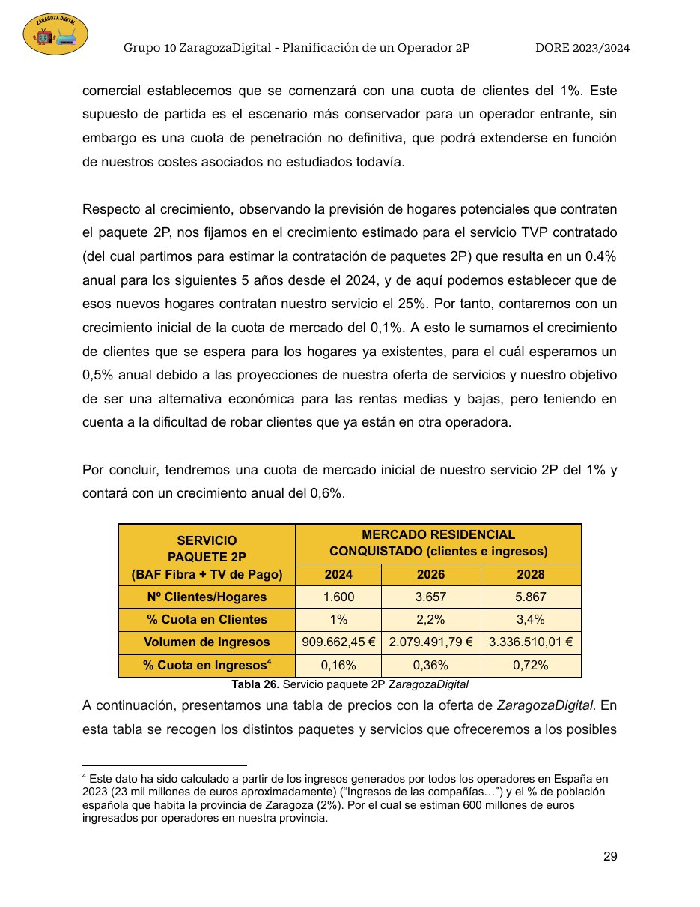

DORE · 2023–2024 · Proyecto en equipo
ZaragozaDigital: planificación de un operador 2P a cinco años
Diseño de la entrada al mercado de un operador regional de telecomunicaciones centrado en Banda Ancha Fija sobre FTTH y Televisión de Pago: dimensionado del mercado, benchmarking competitivo, construcción de oferta y proyección comercial.
Se publica la memoria del proyecto, no apuntes ni material de clase. Las cifras de clientes e ingresos son proyecciones del escenario académico y se presentan como tales, no como resultados reales de mercado.
Puntos destacados
Del mercado al plan comercial.
Metodología
Construcción de la propuesta.
Mercado potencial
Demografía, hogares, uso de telecomunicaciones, renta y proyección de la demanda en Zaragoza.
Competencia
Comparativa de tarifas, contenidos, permanencia y posicionamiento de operadores nacionales y locales.
Oferta
Diseño de velocidades FTTH, TV básica/premium, VoD y paquetes 2P con estructura de precios.
Penetración
Estimación de hogares potenciales, cuota inicial, crecimiento anual e ingresos por mix de productos.
Evidencias
Algunas páginas del análisis.



Competencias
Conceptos aplicados
Entregable seleccionado